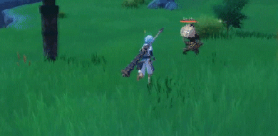
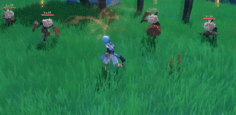
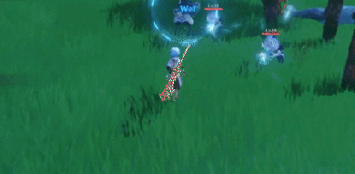

| Attaque Fléau des démons | Attaque normale : Enchaîne jusqu'à 4 coups d'épée. Attaque chargée : Succession d'entailles circulaires qui se termine sur un coup puissant. Combo : 70% + 63,1% + 80,3% + 101% | Chargée circulaire : 56,3% | Chargée finale : 102% | Durée max : 5s | DGT durant la chute : 74,6% | DGT Chute basse/élevée : 149%/186% |  |
| Skill Lame de l'esprit : Givre superposé | Provoque une explosion de glace qui inflige des DGT Cryos aux ennemis en face. Crée un champ de givre qui convertit les DGT des attaques des personnages qui manient l'épée à une ou deux mains ou une arme d'hast en DGT Cryo. DGT Compétence : 172% | Durée Explosion : 2s | Durée du champ : 10s | TdR : 15s |  |
| Burst Lame de l'esprit : Chute d'étoiles | Génère des lames qui explosent, infligent des DGT Cryo de zone et projettent les ennemis en l'air. DGT Compétence : 142% | TdR : 12s | Coût Énergie : 40 |  |